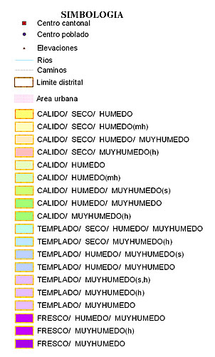

<?xml version="1.0" encoding="ISO-8859-1"?>
<!DOCTYPE html PUBLIC "-//W3C//DTD XHTML 1.0 Frameset//EN" "http://www.w3.org/TR/xhtml1/DTD/xhtml1-frameset.dtd">
<html xmlns="http://www.w3.org/1999/xhtml">
<head>
<meta http-equiv="Content-Type" content="text/html; charset=iso-8859-1" />
<meta name="Author" content="alta4" />
<meta name="Generator" content="ImageMapper 9.1 (System_OS_MSW) [alta4] registered to alta4" />
<meta name="keywords" content="alta4, ImageMapper 9.1, ArcView, ArcEditor, ArcInfo" />
<meta name="robots" content="index" />
<meta name="robots" content="follow" />
<script type="text/javascript" language="javascript"> 
<!-- 
function create() {     
  picture = window.location.search;     
  picture = picture.substring(1);       
  return "";   
} 
 
function writeatt() { 
    return opener.getatt();      
} 
 
function writelegend() {     
    var str = "";  
    if(opener.getlegend()) { 
        str = "<div name='legendoutput'></div>";
    } 
    return str;  
} 
 
function geta_geo_mpoint() {  
    return opener.geta_geo_mpoint(); 
} 
   
//--> 
</script> 
<title>Imprimir</title> 
</head> 
 
<frameset rows="*,40px"> 
    <frame src="print_map.html" name="mainFrame" frameborder="0" /> 
    <frame src="print_button.html" name="bottomFrame" frameborder="0" scrolling="no" noresize="noresize" /> 
 
    <noframes>
        <body> 
        This HTML Document contains frames - your browser cannot display frames. Please get a new browser.
        </body>
    </noframes>
</frameset> 
</html> 
